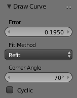

Draw Curve¶
Reference
| Mode: | Edit Mode |
|---|---|
| Panel: | |
| Menu: | |
| Hotkey: | Shift-LMB |
The Curve draw tool allows you to free-hand draw curves.
Stroke Options¶

Curve Stroke panel.
These options can be found in .
- Type
Type of curve to use for drawing.
- Poly
- Bézier Curve with straight line segments (auto handles).
- Bézier
- Tolerance
- Lower values give a result that is closer to the drawing stroke, while higher values give more smoothed results.
- Method
- Refit
- Incrementally re-fits the curve (gives best results).
- Split
- Splits the curve until the tolerance is met (gives better drawing performance).
- Detect Corners
Detects corners and uses non-aligned handles for them.
- Corner Angle
- Any angles above this are considered corners.
- Pressure Radius
- Min
- Minimum radius when the minimum pressure is applied (also the minimum when tapering)
- Max
- Radius to use when the maximum pressure is applied (or when a tablet is not used).
- Projection Depth
Options to control where/how the curves are drawn.
- Cursor
- Uses the depth under the cursor to draw curves.
- Surface
Used to draw on top of other objects.
- Offset
- Distance to offset the curve from the surface.
- Absolute Offset
- Applies a fixed offset (does not scale by the curve radius).
- Only First
Only uses the start of the stroke for the depth.
- Normal/View
- Draws perpendicular to the surface.
- Normal/Surface
- Draws aligned to the surface.
- View
- Draws aligned to the viewport.
Draw Options¶

Draw Curve panel.
These options can be found in the Redo Last Panel.
- Error
- Error distance in object units. This can be seen similar to a subdivision rate for the curve. Lower values give a result that is closer to the drawing stroke while higher values give more smoothed results.
- Fit Method
- Refit
- Incrementally re-fits the curve (gives best results).
- Split
- Splits the curve until the tolerance is met (gives better drawing performance).
- Corner Angle
- Any angles above this are considered corners.
- Cyclic
- Toggles whether or not the curve is Cyclic.